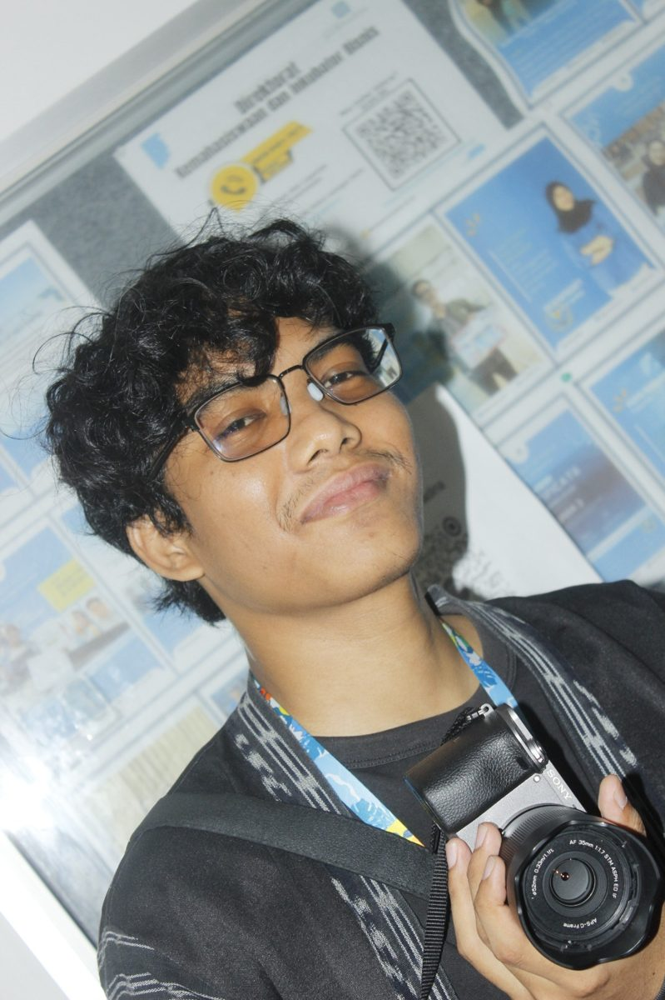

02 About Me
Saya Daffa Elzra Adrian, mahasiswa Teknik Informatika di Universitas Paramadina. Saya belajar paling cepat dengan mengerjakan proyek nyata: dari game sederhana, situs untuk usaha dan sanggar, sampai sistem informasi bencana bersama tim.
Selain menulis kode, saya mengerjakan desain di Figma dan Canva, dan terbiasa menulis serta mengelola dokumen dengan Microsoft Office.
- Kampus
- Universitas Paramadina
- Jurusan
- Teknik Informatika
- Skill
- JavaScript, Figma, Canva, Microsoft Office, Database, Writing